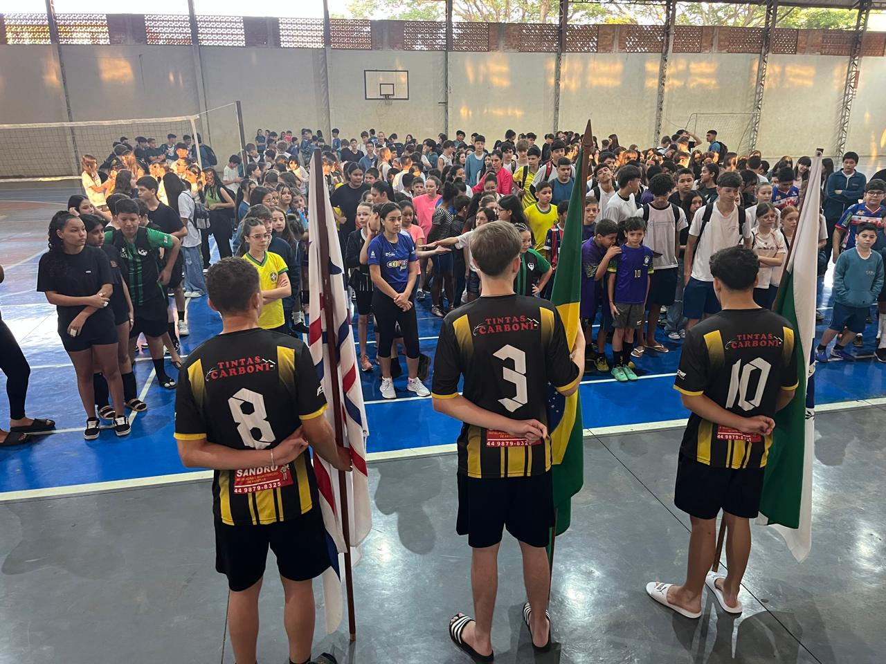

Dia de Esportes
O Interclasse no Colégio Santo Agostinho é um evento muito aguardado que promove a integração entre os alunos através de competições esportivas e culturais. Durante o evento, as turmas se dividem em equipes, incentivando a rivalidade saudável e o trabalho em equipe.

As atividades incluem uma variedade de esportes, como futebol, vôlei e basquete, além de apresentações artísticas, como danças e peças teatrais. Isso não só estimula a prática de esportes, mas também a criatividade e o espírito de colaboração.
O Interclasse é uma oportunidade para os alunos se divertirem, desenvolverem habilidades sociais e fortalecerem laços de amizade. Além disso, o evento é uma maneira de reforçar valores como respeito, disciplina e fair play. Ao final, a celebração das conquistas de todos, independentemente do resultado, cria um ambiente positivo e acolhedor na escola.
As competições são diversificadas, englobando esportes como futebol, vôlei e basquete, além de jogos de mesa e gincanas que incentivam a criatividade e o trabalho em equipe. O ambiente é vibrante, com os corredores e campos sempre cheios de energia, risadas e aplaudos, tornando cada partida uma verdadeira celebração.

O Interclasse é mais do que uma competição; é uma oportunidade para todos se unirem, celebrarem suas conquistas e cultivarem valores essenciais como respeito, solidariedade e fair play. Com certeza, é um dos momentos mais aguardados do ano letivo, que deixa uma marca especial na trajetória de cada aluno!
Voltar para a Página Inicial